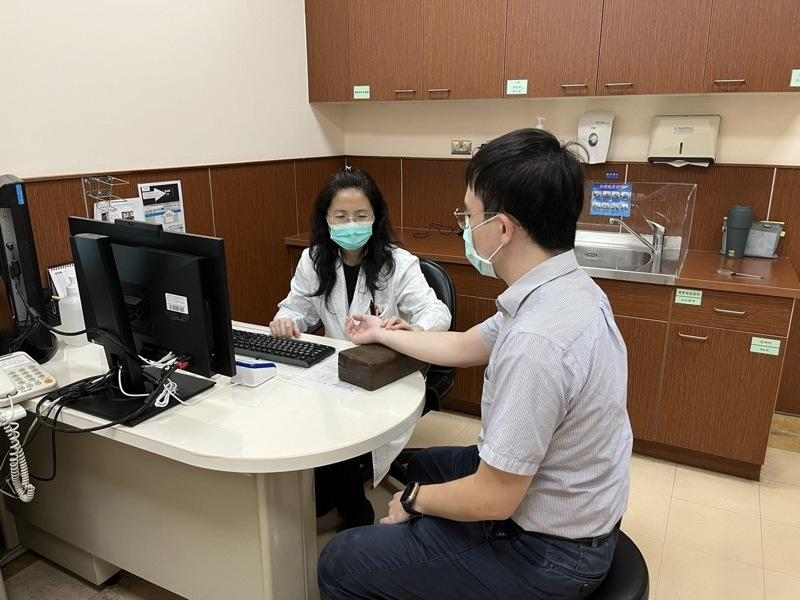
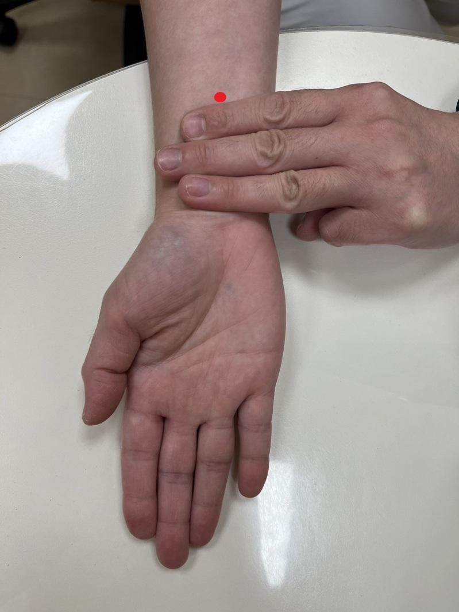

胃食道逆流可谓现代人常见的文明病，台湾台南市立安南医院中医部医师廖殷梓说，诊间常听闻病人询问「医生，我觉得喉咙卡卡、胸口热热的，为什么？」这就是典型的胃食道逆流症状，俗称「火烧心」，胃食道逆流虽很常见，但却因容易降低生活品质，更具有癌化风险，呼吁民众务必积极治疗。
廖殷梓表示，胃食道逆流是指胃中内容物逆流到食道，进而引发的症状，全台盛行率约10至20%，且逐年增加，且因胃食道逆流难以根治，一旦停药便容易复发，不仅严重影响病人的生活品质，更可能导致巴洛氏食道及食道腺癌，因此建议积极治疗。 !function(v,t,o){var a=t.createElement("script");a.src="https://ad.vidverto.io/vidverto/js/aries/v1/invocation.js",a.setAttribute("fetchpriority","high");var r=v.top;r.document.head.appendChild(a),v.self!==v.top&&(v.frameElement.style.cssText="width:0px!important;height:0px!important;"),r.aries=r.aries||{},r.aries.v1=r.aries.v1||{commands:};var c=r.aries.v1;c.commands.push((function(){var d=document.getElementById("_vidverto-bc0de73c10937be205a8d57fd75a9690");d.setAttribute("id",(d.getAttribute("id")+(new Date()).getTime()));var t=v.frameElement||d;c.mount("10171",t,{width:720,height:405})}))}(window,document);
她提到，胃食道逆流诊断以临床症状为主，目前西医治疗方式包含改变饮食和生活方式、药物治疗，若无效才考虑手术，不过，临床上常有病人因西药治疗效果不佳、无法耐受副作用或反复发作，转而寻求中医治疗。
廖殷梓说，在中医上来说，胃食道逆流发病主因是脾胃虚弱，病机为胃失和降、胃气上逆等，治疗会以调脾胃、肝胆之气机升降为主，如旋覆代赭石汤、半夏泻心汤、加味逍遥散等；中医治疗优势在于副作用少、可舒缓情绪压力、降低复发率，并根据病人体质标本同治。另外，生活上也可应用简单的穴位按摩缓解症状，像是内关穴、足三里穴等。
廖殷梓强调，胃食道逆流惟有药物、饮食、生活、情绪调整4点关键多管齐下、积极治疗，建议饭后避免立刻躺下、睡觉时可将床头擡高或向左侧睡、避免穿太紧的衣服、少做弯腰动作等；饮食上则应避免暴饮暴食和刺激性食物，平时则保持心情愉快、放松，才有机会让身体恢复健康。

台南市立安南医院中医部医师廖殷梓提醒，胃食道逆流很常见，但容易降低生活品质且有癌化风险，呼吁民众务必积极治疗，图为门诊示意图。（安南医院提供）
胃食道逆流可谓现代人常见的文明病，台湾台南市立安南医院中医部医师廖殷梓说，诊间常听闻病人询问「医生，我觉得喉咙卡卡、胸口热热的，为什么？」这就是典型的胃食道逆流症状，俗称「火烧心」，胃食道逆流虽很常见，但却因容易降低生活品质，更具有癌化风险，呼吁民众务必积极治疗。
廖殷梓表示，胃食道逆流是指胃中内容物逆流到食道，进而引发的症状，全台盛行率约10至20%，且逐年增加，且因胃食道逆流难以根治，一旦停药便容易复发，不仅严重影响病人的生活品质，更可能导致巴洛氏食道及食道腺癌，因此建议积极治疗。
她提到，胃食道逆流诊断以临床症状为主，目前西医治疗方式包含改变饮食和生活方式、药物治疗，若无效才考虑手术，不过，临床上常有病人因西药治疗效果不佳、无法耐受副作用或反复发作，转而寻求中医治疗。
廖殷梓说，在中医上来说，胃食道逆流发病主因是脾胃虚弱，病机为胃失和降、胃气上逆等，治疗会以调脾胃、肝胆之气机升降为主，如旋覆代赭石汤、半夏泻心汤、加味逍遥散等；中医治疗优势在于副作用少、可舒缓情绪压力、降低复发率，并根据病人体质标本同治。另外，生活上也可应用简单的穴位按摩缓解症状，像是内关穴、足三里穴等。
廖殷梓强调，胃食道逆流惟有药物、饮食、生活、情绪调整4点关键多管齐下、积极治疗，建议饭后避免立刻躺下、睡觉时可将床头擡高或向左侧睡、避免穿太紧的衣服、少做弯腰动作等；饮食上则应避免暴饮暴食和刺激性食物，平时则保持心情愉快、放松，才有机会让身体恢复健康。

胃食道逆流在生活上可应用简单的穴位按摩缓解症状，像是内关穴、足三里穴等。图为内关穴。（安南医院提供）